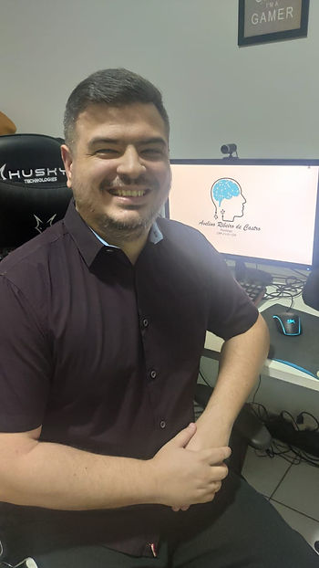
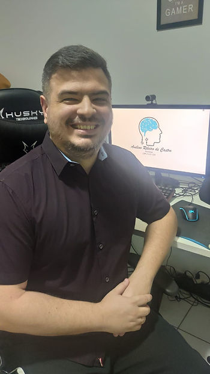

Texto de Avelino Ribeiro de Castro

Tentarei seguir uma perspectiva mais acadêmica de texto, sem querer me sustentar em alguma abordagem psicológica específica. Não quero deixar a importância da Psicologia do Esporte sobre o assunto de lado, mas levantar pontos pertinentes para quem se importa com o Esporte como um todo, para quem está aberto para compreender os esportes eletrônicos.
Começo pelo básico, que também precisa ser lembrado novamente em algumas situações: jogo eletrônico é diferente de esporte eletrônico (esport). Todo esporte eletrônico é um jogo eletrônico, mas nem todo jogo eletrônico é um esporte eletrônico. Somente isso já é uma regra básica para mais de um tema que envolve jogos em aparelhos eletrônicos, mas que muitas pessoas parecem fazer questão de deixar de lado.
Continuando por esse lado mais distante de nosso assunto principal, todo jogo eletrônico é um programa, uma criação construída com regras, funções e procedimentos, feitos para se comportarem de maneiras definidas. Sim, são regras. São uma manifestação de como as pessoas que criaram a ideia pra esse determinado jogo esperam que outras pessoas, os jogadores, usem seu programa e tenham um ganho ao fazê-lo. Essa ideia, porém, não consegue limitar totalmente a criatividade e raciocínio de seus jogadores. Seja pela existência de “bugs”, falhas na programação, ou por vislumbre de novas estratégias, combinações de comandos ou simples diferente forma de perceber o jogo, os jogadores sempre “lutaram” contra a programação e seus desafios. E sempre venceram.
Todo criador de jogo é um jogador. Os jogadores criam os jogos, da mesma forma que os jogadores criam os esportes.
Talvez você não conheça um esporte bem antigo, chamado Tsü Tsü, da antiga China, onde tribos vencedoras de batalhas chutavam as cabeças dos chefes e guerreiros da tribo derrotada, como numa espécie futebol. Era através desse “jogo” que os jogadores assimilariam as virtudes dos guerreiros derrotados e tornariam-se melhores combatentes. Ou do Calcio, o “futebol italiano” que mais a frente foi levado a Inglaterra, local onde foi organizado e regulamentado.
Essa é, junto com a competição, talvez, uma das principais características de um esporte: ele “acontece” através da sociedade onde é praticado. Aconteceu com o futebol, aconteceu com outros esportes tradicionais, acontece com o esporte eletrônico. Valores, ideias e formas de praticar uma atividade fazem parte da criação e sustentação de um esporte. Por que esportes mudam? Suas regras mudam? Talvez demore mais tempo que uma ou outra pessoa ache razoável, mas mudam. E algumas mudanças sofrem resistência, que geralmente acontece para o bem da conexão entre prática esportiva e sociedade.
A nossa sociedade (pra não dizer o mundo) vem se transformando assustadoramente rápido desde século passado. Conseguimos nos conectar com o outro lado do planeta em questão de segundos. Conseguimos vacinas pra doenças em menos de 12 meses. Acabamos com os recursos de um planeta inteiro mais rapidamente que a Natureza consegue repor. Alguns controlam suas casas por voz, e até mesmo geladeiras conseguem acessar internet. Por que havería-se de pensar que a instituição esporte não seria influenciada pelo que essa sociedade está vivendo?
A própria instituição Esporte, para ter-se um comparativo, tem passado por enormes mudanças desde século passado, justamente acompanhando os giros de nosso mundo. O que antes era amadorismo, tornou-se profissional. O que era feito para mostrar como as habilidades humanas poderiam superar limites, tornaram-se combustível para nações desenvolverem habilidades humanas e ignorarem limites. O que era uma virtude de uma sociedade, tornou-se produto, escambo. Esse é o esporte moderno, em muitos pontos.
Mas uma característica do esporte tradicional se mantém. Os esportes existem, e podem continuar existindo, sem a presença das grandes entidades internacionais que “se apropriaram” de alguns esportes. Mas estamos falando de práticas esportivas seculares, e isso faz diferença.
O chamado esporte eletrônico tem somente algo em torno de 40 anos, e somente na última década que veio a se popularizar, por causa do surgimento de outras ferramentas que se utilizam da internet. Esse movimento foi uma explosão talvez jamais vista em termos de praticantes de esporte na história. Em poucos anos, os esports tem hoje a capacidade de conseguir, inclusive, uma audiência maior que a de um “Super Bowl”. E aí chegamos noutro ponto.
Todo esporte existe não somente para aqueles que o praticam, mas também para outros que assistem, ou dependem dele pra algo. Os “torcedores” existem juntamente com o esporte. E esse ponto, a audiência, foi um dos pontos também bastante transformados no último século, pois a prática esportiva não era mais somente local, poderia agora ter proporções mundiais. Ou ninguém mais se lembra de Eric Moussambani, nadador da Guiné Equatorial, que, nos Jogos Olímpicos de Sydnei, em 2000, quase perde uma prova de 100m livres, mesmo sem ter oponentes? Eric não foi exemplo de performance, mas foi exemplo de atleta. A audiência clamou, não pelo que viu, mas pelo que ele representou. E todo o mundo pode acompanhar pela televisão. Imagine um esporte que nasceu no meio eletrônico.
Entretenimento, por um lado, diz muito mais de quem o consome do que de quem pratica a atividade.
Quantos canais de televisão fechados, que necessitam de pagamento extra, existem que transmitem dezenas de campeonatos de futebol? O esporte como “espetáculo”, como bem comentado por Umberto Eco, famoso filósofo e escritor italiano, já não é mais tão saudável quanto antes.
A meu ver, o esporte eletrônico é uma das maiores mudanças que a instituição esporte passa desde o surgimento do profissionalismo. A indústria de entretenimento dos jogos eletrônicos já era uma realidade. Muitas e muitas pessoas, de variadas idades, já passavam grande parte de seu tempo de diversão nos jogos eletrônicos. A competição entre jogadores em alguns tipos desses jogos veio a tornar-se entretenimento para outros jogadores. E se envolve disputa, envolve performance. E também dinheiro.
Performance e público tem seu papel em quase todos os tipos de esportes, até mesmo nos casuais, de tempo livre. Ou você nunca viu aquela postagem de um amigo depois de uma partida casual de beach tennis ou outro esporte?
E então chegamos noutro ponto que tomou proporções gigantescas quando falamos em esportes, em praticamente todas as suas áreas: performance. Não se consegue falar de esporte de alto rendimento sem discutir, trabalhar e entender performance. Inclusive, os torcedores, cada vez mais, exigem que seus atletas, equipes, clubes e seleções sejam o ápice da prática esportiva em termos de performance, rendimento. Queremos a vitória, acima de tudo, acima de qualquer preparação ou qualidade de treino que o oponente tenha tido. Os super-atletas não mais são ícones, exemplos. Eles precisam ser a regra.
Sim, preciso me segurar, senão facilmente entro noutros temas. Mas isso serve de exemplo para entender que esportes não são, nem podem ser, considerados por pontos de vista estáticos e limitados.
Como buscar performance num esporte eletrônico? Treino. Esforço. Sacrifício. Conhecimento. Profissionalismo. Disciplina. Ajuda. Ou você acha que treinadores, psicólogos, fisioterapeutas, nutricionistas, e outros, não conseguem melhorar as condições para atletas praticarem seus esportes da melhor maneira possível?
Ou o ponto em questão é a chamada “fisicalidade”? A tal “predominância física”?
O que seria dos emails, se essa fisicalidade fosse o ponto supremo nas discussões…
Não querendo abrir espaço para mais “falação esportiva”, mas quando o Estado deixa de discutir sobre um fenômeno social como os esports por causa de argumentos como “as desenvolvedoras é que ganham dinheiro”, “o jogo eletrônico não é imprevisível”, “não é predominantemente físico”, deixa-se de considerar as possibilidades de fatores que já estão em andamento e ocupando um espaço de maneiras que, não necessariamente, visam o bem-estar daqueles que praticam o esport. Condições de treino, de trabalho, contratos, primeira profissão, representação nacional, turismo, desigualdades sociais, entretenimento, saúde, qualidade de vida, disciplina, cidadania… Sim, isso tudo pode ser discutido e atingido via políticas específicas, que conheçam a ferramenta e seus valores agregados, além de seu alcance.
O esporte eletrônico, atualmente, encontra-se numa posição interessante. Internacionalmente reconhecido, nacionalmente em expansão. Inclusive, tendo o Brasil como referência em uma das modalidades (jogos) mais acompanhadas e disputadas. Modalidades tais que se desdobram para manter seus ecossistemas funcionando, enquanto outras nascem e tentam se estabelecer e outras, tentam sobreviver. Estamos presenciando um esporte nascendo, crescendo, sobrevivendo.
Qual a nossa postura em relação ao que é diferente?
Sobre o autor:
Avelino Ribeiro de Castro
CRP-21/01159
Especialista em Abordagem Centrada na Pessoa com ênfase em psicoterapia
Membro da ABRAPESP
Membro da ABRASPEE
Membro da Comissão de Psicologia do Esporte do CRP-21
Atua com esporte eletrônico desde 2017.